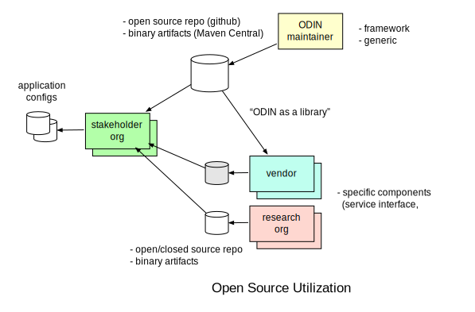

Why is ODIN-fire Open Sourced
There are three types of stakeholder categories
- agencies (fire, land management, local/state/federal government etc.)
- research organizations
- companies with wildland fire related products and services
This means the stakeholder community is larger than "just" fire agencies, of which there already are hundreds. The goal is to provide some common ground for the whole stakeholder community with a low barrier of entry for everybody.

This does not mean that all applications built with ODIN-fire have to be public, and it especially does not mean that ODIN-fire based components developed by 3rd parties (e.g. vendors) have to be open sourced. ODIN-fire (like the rest of RACE) is published under Apache_License_v2 and hence supports to develop closed, commercial software on top of it.
The goal is that no stakeholder has to develop from scratch, and that - from a technical point of view - new 3rd party components/services can easily be integrated by other stakeholders. To that end ODIN-fire itself is open sourced and royalty free.
Of course every individual or organization that wants to add to the public basis is more than welcome to become an ODIN-fire contributor. Our ultimate goal is a synergetic community to tackle the increasingly hard problem of wildland fire management.